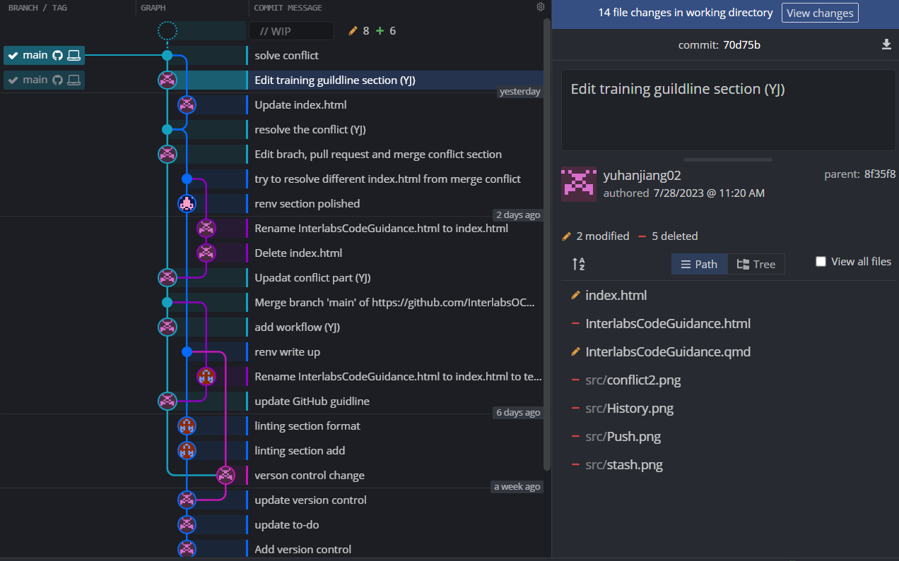
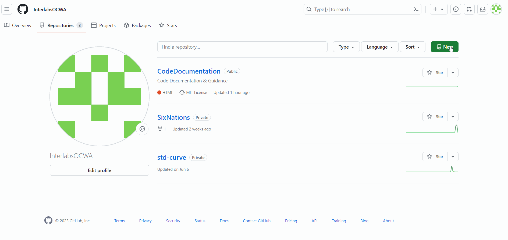
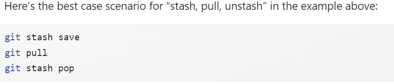

Warning: package 'networkD3' was built under R version 4.3.1
library(reticulate)#to run python in this file
Warning: package 'reticulate' was built under R version 4.3.1
Introduction
Within the interlabs program, R code performs data processing, plots and statistics generation. As an aside, an ancillary collection of spreadsheets with Excel code and python code are used in sample preparation and pre-processing.
The R code (“base code”) continues to evolve to serve the new requirements and exploratory analysis in the interlabs program. With the rapid advancement and frequent customizations, it was recognized the analysis process would benefit from comprehensive code tidying. As a rule-of-thumb, with each new feature development, teams should allocate a further 15-20% of time to resolve technical debts. There is currently no established tracking of technical debts besides some in-code comments and team members recollection.
The purpose of this document is: 1. To serve as documentation accompanying the code, and to be continually updated as the code evolves
2. Set out practice standards for team to collectively continue hygienic data handling & coding following the refactoring project in 2023; serve as on-boarding training for new team members
External File Structure
### I. Code Documentation#1. Inventory existing external file dependencies and working procedures outside of main codebase, e.g. the python snippets, address books, flow of sample notes, raw, and clean data *(4 weeks / July 2023)*\
An inventory of file and code relationships external to the main codebase is currently is shown in Table 1 and Figure 1 below.
Table 1: Spreadsheets Inventory
#Yuhan - please load into your excel table as df, then use kable package to format it
: Existing Spreadsheets
Code Internal Structure and Dependency
#Jane to insert Packages/Libraries, version Listing *(1 week, July 2023)*
Figure 1: Intra-base code relationships
#Yuhan to insert flowchart code and execute the code to show figure#*Deliverable: Inventory & flowchart of external relationships*#2. Inventory existing internal code dependencies and timelines (in-progress work shown in Figure 1) *(4 weeks / July 2023)*\# **Deliverable: Inventory & flowchart of intra-basecode relationships**
: Intra-base code relationships
nodes =data.frame("name"=c("Emails", # 0"Raw data", # 1"Clean data", # 2"20230529_Sample_Notes.xlsm", # 3"WBE_Sample_Phasma-CA_20230511.Rmd", # 4"plots", # 5"dataframe", # 6"report")) # 7links =as.data.frame(matrix(c(0, 1, 1, # Each row represents a link. The first number1, 2, 1, # represents the node being conntected from. 2, 3, 1, # the second number represents the node connected to.2, 4, 1, # The third number is the value of the node4, 5, 1,4, 6, 1,5, 7 ,1,6, 7, 1),byrow =TRUE, ncol =3))names(links) =c("source", "target", "value")sankeyNetwork(Links = links, Nodes = nodes,Source ="source", Target ="target",Value ="value", NodeID ="name",fontSize=12, nodeWidth =30)
Extract and analyze relevance of in-code comments (4 weeks / July 2023) Deliverable: Code Documentation, interim
All work must be done on OCWA-provided laptops. Overall restrictions applicable to OCWA operating environment will restrict software installation - manager approvals as well as IT “white-list”. The
R
Version Check
To check your installed version of RStudio and R, respectively, either use the GUI’s or by inputting:
RStudio.Version()
```{r}version```
_
platform x86_64-w64-mingw32
arch x86_64
os mingw32
crt ucrt
system x86_64, mingw32
status
major 4
minor 3.0
year 2023
month 04
day 21
svn rev 84292
language R
version.string R version 4.3.0 (2023-04-21 ucrt)
nickname Already Tomorrow
To check your package versions, refer to the package window in the corner of RStudio or input:
```{r}print(head (tibble::tibble(Package =names(installed.packages()[,3]),Version =unname(installed.packages()[,3]) ), n=600#where n = an appropriately large value to capture all your packages ))```
renv() package is used to manage project-local R dependency, with capability to also capture Python dependency (where the latter is run off RStudio using reticulate).
The general workflow when working with renv is:
1. Call renv::init() to initialize a new project-local environment with a private R library
2. Work in the project as normal, installing and removing new R packages as they are needed in the project
3. Call renv::snapshot() to save the state of the project library to the lockfile (called renv.lock)
4. Continue working on your project, installing and updating R packages as needed
5.Call renv::snapshot() again to save the state of your project library if your attempts to update R packages were successful, or call renv::restore() to revert to the previous state as encoded in the lockfile if your attempts to update packages introduced some new problems.
When renv’s Python integration is active, a couple extra features will activate:
- renv will instruct reticulate to load your project-local version of Python by default, avoiding some of the challenges with finding and selecting an appropriate version of Python on the system.
- Calling reticulate::py_install() will install packages into the project’s Python environment by default.
- When renv::snapshot() is called, your project’s Python library will also be captured into requirements.txt (for virtual environments) / environment.yml (for Conda environments).
- Similarly, renv::restore() will also attempt to restore your Python environment, as encoded in requirements.txt / environment.yml from a previous snapshot.
Python
To check your version of python, use command line or in python:
import sysprint(sys.version)
3.11.4 (tags/v3.11.4:d2340ef, Jun 7 2023, 05:45:37) [MSC v.1934 64 bit (AMD64)]
Version Control
#Yuhan's section#### II. Training/Establishing Guidelines#1. Acquire training on and establish version control on Github *(2 weeks/July 2023)* *Deliverable: Training/Guidance document section, specifically method for & train team as soon as possible on version control/change management**\### III. Preparatory Version Control & Unit Tests#1. Establish version control on Github. All team members to abide by training guidelines when introducing changes to main code base *(2 weeks/July 2023)*\# **Deliverable: Version control workflow graphic (to incl. in Training/Guidance document)**\
In the Search or Run line type ”cmd”and press enter
Check git version: git --version
Update git version if have git but not the latest version:git update-git-for-windows
Introduce yourself to Git
Type the following in cmd: git config --global user.email "you@youremail.com"git config --global user.name "Your Name"
See result: git config --global --list
Note
Note: This must be the email associated with your GitHub account.
Install a Git client
A Git client and an integrated development environment, such as RStudio, are not necessary to use Git or R, respectively. But they make the experience more pleasant because they reduce the amount of command line and provide a richer visual representation of the current state.
Here’s a screenshot of GitKraken (see below) open to the repository for the R package pkgdown. You get a nice graphical overview of the recent commit history, branches, and diffs, as well as a GUI that facilitates the most common Git operations.

Connect to Git, GitHub and RStudio
Setup a new remote repository in GitHub 
Connect Rstudio to GitHub and clone the repo to local
After click “Create Project” to create a new directory, which will be all of these things:
a directory or “folder” on your computer
a Git repository, linked to a remote GitHub repository
an RStudio Project
Detect Git from RStudio
Type where git in cmd to get the git executable path
From RStudio, go to Tools > Global Options > Git/SVN and make sure that the box Git executable points to your Git executable.
Git Fundamentals
Overall flow chart
The image below shows a overall git flow chart.
Make changes and commit
Click on the Git tab in RStudio. You’ll notice that there’s only one file listed, since RStudio only lists files that have changed in its git interface.
Click on the Staged check box to stage your change. Now click on Diff(next to Commit) to display a summary of what’s changed. Lines that have been added are green. Lines that have been removed are red.
Add a commit message and click on Commit. Every time make a commit, must also write a short commit message.
In the Git tab of RStudio, click on Diff and then History. You’ll see that you can look through every commit you’ve ever made. This can be extremely useful for finding bugs or looking back to how your model looked a few months ago.
Check on the state of the Git world: type git status in terminal
Check your past commits: type git log in terminal
Note
When to reconsider stage: this will all go to GitHub. Consider if that is appropriate for each file. You can absolutely keep a file locally, without committing it to the Git repo and sending to GitHub. Just let it sit there in your Git pane, without being staged. No harm will be done. If this is a long-term situation, list the file in .gitignore.
Push & Pull
To start working on a project, Pull any new changes to update local copy.
When you are finished and committed, to Push these changes to the remote repository (e.g., GitHub). Should see below image if successfully pushed.
Branch
Branching is the way to work on different versions of a repository at one time. By default your repository has one branch namedmasterwhich is considered to be the definitive branch.
When you create a branch off the master branch, you’re making a copy, or snapshot, of master as it was at that point in time. This is particularly useful when you are working on a collaborative project. For example, if someone else made changes to the master branch while you were working on your branch, you could pull in those updates.
Create a new branch in GitHub/RStudio/shell
GitHub:
Rstudio:
Shell: type $ git branch <branch_name>
Switch to the working branch
Rstudio:
Shell: type $ git checkout <branch_name>
4.1. Pull Request and Merge Chances
You will notice that at the top of all you files there is a new section that says: Your recently pushed branches:. The changes you made to your script have been pushed to your online copy of the project and are now in the branch NewPlot. In order to merge them into your master branch we need to create a pull request. Click on the button that says Compare and pull request.
In the Open a pull request page click on Create pull request.
GitHub has now compared the two versions of your project that are in the two branches, master and Newplotand it is telling us that there are no conflicts between the two versions.
Now it’s time to bring your changes together – merging your Newplot branch into the master branch. Click the green Merge pull request button to merge the changes into master. Click Confirm merge. Go ahead and delete the branch, since its changes have been incorporated, with the Delete branch button in the purple box.
Issues might occur
Pull, but you have local work
Problem: You want to pull changes from upstream, but you have done some new work locally since the last time you pulled. This often comes up because what you actually want to do is push, but Git won’t let you until you first incorporate the upstream changes.
Recent commit history of origin/main: A–B–C
Recent commit history of the local main branch: A–B–D
or maybe: A–B–(uncommitted changes)
Your goal: get commit C into your local branch, while retaining the work in commit D or your uncommitted changes.
Best case, no-merge-conflicts version of git pull
Have Conflict: ‘CONFLICT (content): Merge conflict in file Automatic merge failed; fix conflicts and then commit the result.’
For Local work is committed (A–B–D):
Literally, at each locus of conflict, pick one version or the other (upstream or local) or create a hybrid yourself. Remove the all the markers inserted to demarcate the conflicts. Save.
For Local work is uncommitted (A–B–(uncommitted changes)):
commit them and follow previous committed solution or
use git stash to temporarily store some changes 
Version control workflow
The overall workflow graph of version control.
Working location - Need to confirm
The home folder locations for main branch:
S:Surveillance\3_Templates_References_codes
The home folder locations for Round branch:
S:Surveillance\4_WIP103-Interlabs_Code
The home folder locations for develop branch:
S:Surveillance\1_QMS
Clone the remote repository to local directory for each branch working.
gitignore file
To tell Git which files and directories to ignore when you make a commit. To share the ignore rules with other users who clone the repository, commit the .gitignore file in to your repository.
The gitigonre content reference: https://swcarpentry.github.io/git-novice/06-ignore.html
The data/files we don’t want to commit to GitHub:
all the data spread sheet
plots
reports
Unsolved questions
Zombie code: cut off but might come back?
Linting / Style Guide
General - camelCase - tab indentation Linting - continuous integration In RStudio IDE:
- some linting is included, however it is for errors only - selecting code and hitting Ctrl + I will re-indent code for you
lintr:
lintr package will be set up with the main code to provide diagnostic linting (i.e. as opposed to auto-correction using stylr package), recommending but not enforcing stylistic changes. It will activate with github upload workflows following this set up command, which also creates a .github/workflows folder with lint.yaml
More options for linting and details are available for reference at https://blog.r-hub.io/2022/03/21/code-style/
usethis::use_github_action("lint")
✔ Setting active project to 'C:/Users/jiangyu/Documents/CodeDocumentation'
✔ Saving 'r-lib/actions/examples/lint.yaml@v2' to '.github/workflows/lint.yaml'
• Learn more at <https://github.com/r-lib/actions/blob/v2/examples/README.md>.
# for context, check in console - vignette("continuous-integration")
===================================
Refactoring
recommend every x period
workflow
unit testing approaches & practices
Issues-tracking method
Document the procedures for above practices and create training presentations for the team (3 weeks) Deliverable: Training/Guidance document Deliverable: Training session
Unit Testing Framework
Set up formal testing, enabling validation of no-loss-of-function and establishing built-in “bases” during refactoring. (August 2023)Deliverable: Test framework & test-suite code
Cursory review in June 2023 found that base code functions (more suitable for testing) are few and generally used to generate plots (unsuitable for testing). Testing may be adapted to instead inspect dataframe size & output value spot-check.
Packages/Libraries organization (3 weeks / July 2023):
create reference document of package purpose/usage in the program (including any removed but potentially useful)
remove any currently unused packages, narrowing list/call to just the necessary ones
create packrat compilation or Docker of used packages to preserve running versions Metric: Number of superfluous packages/libraries, number TBD to 0 Deliverable: One packrat / docker with all in-use packages including versions
Linting for consistent style (1 week; August 2023) Deliverable: Commit [track number]
Refactoring cycle, which will be repeated for each issue/potential improvment. As adapted from Fowler: 0.1 Select issue/potential improvement to work on. Create branch on version control 0.2 Introduce comments/pseudo-code for changes. Obtain consensus with reviewer Deliverable: Branch & Commit [track number]
Create getters and setters for the field
Locate all references: replace access with calls to the getter, and changes to the field with calls to the setter
Compile and test after changing each reference
Declare the field as private
Compile and test. Switch to light mode for coder & reviewer
Reviewer checks pull request, code and merge. Light mode for all users Deliverable: Commit [track number]
(extract from Lemaire, 2020. Refactoring at Scale)
Dark Mode / Light Mode : We can compare pre-refactor and post-refactor behavior by employing what we’ve coined at Slack as the light/dark technique
Dark mode : Both implementations are called
The results are compared
The results from the old implementation are returned
Light mode :
Both implementations are called
The results are compared
The results from the new implementation are returned
How To ?
Once the abstraction has been properly put in place
Start enabling dark mode
Monitor any differences being logged between the two result sets
Track down and fix any potential bugs in the new implementation causing those discrepancies
Repeat this process until you’ve properly handled all discrepancies, Enabling dark mode to broader groups of users
Once all users have been opted in to dark mode
Continue logging any differences in the result sets
Continue to opt broader groups of users into light mode, until everyone is successfully processing results from the new implementation.
Disable execution of both code paths
Remove the old logic altogether : only the new implementation should remain
Typical Code Issues & Correspondent Refactoring
Refactoring methods
Extraction: breaking code into chunks or utilizing existing chunks for isolation into separate functions and replaced with a call to the functions. Change patterns into abstraction. Similarly for variables
Inline refactoring: finding functions calls and replacing them with the function content (opposite of extraction)
Simplifying methods logic: consolidate conditional fragments and using polymorphism instead of conditionals
Simplifying method calls: examining parameters involved and adding/replacing as needed
Handling Commented-out code
## stuff to incorp. COMMENTED-OUT CODE In the case of commented-out code, it’s pretty obvious that the code is unused. I always recommend that developers who are tempted to comment-out code instead simply delete it if the code is tracked using version control. If you need it again someday, you can easily recover it by going back through your commit history.
new function to help mitigate code degradation. Let’s say we write up a simple helper to encapsulate all the logic for validating a user object; we’ll call it validateUser
A NOTE ABOUT COUNTING LINES OF COMMENTS By and large, ignoring comments is good practice when counting lines of code. Docblocks and inlined TODOs do not affect the behavior of our programs, so including them in our size calculations would not help us better characterize a program’s complexity. In practice, however, I’ve noticed that you can easily pinpoint some rather perplexing sections of code by counting the number of inline comments at the function level. In general, developers tend to leave inline code comments when the surrounding logic is difficult to follow. Whether that’s because the code is dealing with a complicated piece of business logic or it has just become gradually more convoluted over time, we tend to leave some pointers to others who come after us when modifying exceptionally tricky code. Therefore, we can use the quantity of inline comments within a single function, whether short or long, as a possible warning sign.
When we’re working to improve an existing implementation, whatever the extent of our endeavor, we want to be sure that we’re correctly retaining its behavior. We can safely assert that our new solution continues to work identically to the old by relying on the original implementation’s test suite. Because we are relying on the test coverage to warn us about potential regressions, we need to verify two things before beginning our refactoring effort: first, confirm that the original implementation has test coverage and, second, determine whether that test coverage is adequate.
refactoring requires us to be able to ensure that behavior remains identical at every iteration. We can increase our confidence that nothing has changed by writing a suite of tests (unit, integration, end to end), and we should not seriously consider moving forward with any refactoring effort until we’ve established sufficient test coverage.
Unit testing notes
Set a canary test (it checks if the test framework works)
Add few (automated) tests. Start with code candidate to change first. If code wasn’t designed to be testable, don’t change it yet. Make your best to test it as is. This is very important.